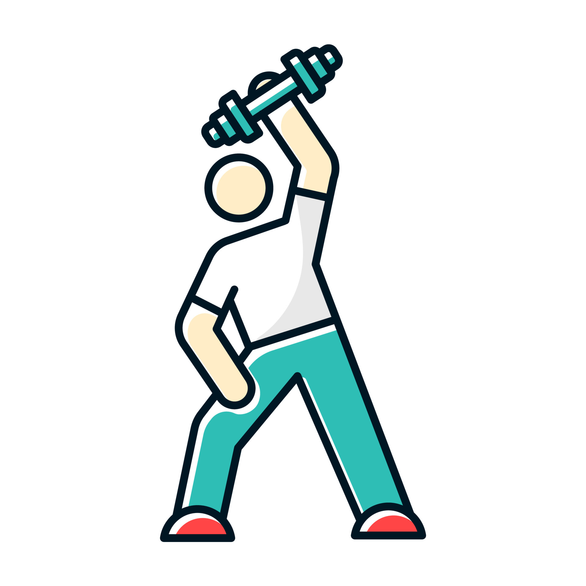
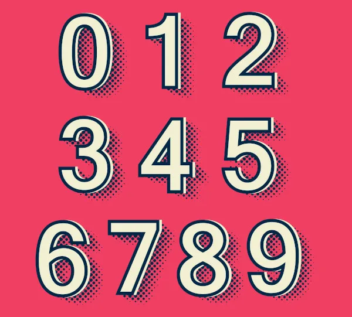

Integrated Management System of the Angolan Internet Association (SIG-AAI)
UCAN - Faculty of Engineering - Computer Science and Engineering degree
Java EE | JSF | Primefaces | EJB | XHTML | AJAX | CSS | JavaScript | PostgresSQL | PGAdmin | WildFly | NetBeans | Enterprise Architect | UML | RUP | Balsamiq Mockups
The system manages the company's data, users, members, services, finances, employment and security.
The project modeling was done using the UML model and the RUP methodology.
Diagrams and Components created: Class, Sequence, State, Activity, Collaboration, Component, and Installation diagrams for the project, Requirement Document, Business Glossary, Vision Document, Use Case Specification, User Interface Prototypes, Documentation HTML, Project Report.
Gender Prediction from Face Images
Machine Learning | CNN | UTKFace dataset | Python | Keras | Tensorflow | Numpy | Pandas | Matplotlib | Seaborn

The convolutional neural network predicts the person's gender from a face image based on patterns learned in
training, achieving a validation accuracy of 91% after 12 epochs.
UNINOTAS
React | Bootstrap | Firebase

Web app that allows users to review, comment on reviews, and rate Angolan universities on multiple categories. (hosted on herokuapp).
AES and RSA Encryption
Python | Tkinter

The system encrypts and decrypts messages written in a text field or a text file using the AES and RSA Ciphers.
Calories Burned Prediction
Data Analysis | Regression | fmendes-DAT263x-demos dataset | XGBoost | Python | Numpy | Pandas | Matplotlib | Seaborn | Scikit-Learn

The convolutional neural network predicts the person's gender from a face image based on patterns learned in
training, achieving a validation accuracy of 91% after 12 epochs.
Grammar
UCAN - Faculty of Engineering - Computer Science and Engineering degree
Java | Prolog | Artificial intelligence | Natural Language Processing (NLP) | Netbeans
The system performs a morphological analysis of a given phrase entered by the user, and adds new words and their grammatical classes to its knowledge base.
Restaurant Advertising Website
UCAN - Faculty of Engineering - Computer Science and Engineering degree
HTML | CSS | JavaScript | Bootstrap | Visual Studio Code

The advertising website allows a restaurant's customers to view the menu, contact information, location, and book a reservation.
Library Management System
C | Data Structures (Binary Search Tree, Linked List)

The library management system uses a binary search tree to store and retrieve information about books.
Songs Playlist Manager
C | Data Structures (Linked List, Queue, Deque, Array)
The songs playlist manager allows users to create playlists of songs, edit them, and "play" songs in order.
Height-Balanced Trees
C | Data Structures (AVL Tree, Linked List, Array)
The contacts management system uses a height-balanced tree, specifically an AVL tree, to store and retrieve information about contacts.
Movies Information
Python | Django | HTML | Bootstrap | SQLite

The system shows movie information, such as title, genre, release year, and duration.
Doctor's Office
UCAN - Faculty of Engineering - Computer Science and Engineering degree
Java | Prolog | Artificial intelligence | Netbeans

The system infers the likelihood of different patient illnesses from the selected symptoms.
Best Route
UCAN - Faculty of Engineering - Computer Science and Engineering degree
C | Data Structures (Graph, Matrix, Stack, List) | Visual Studio Code

The Best Route project calculates the shortest distance from a starting point to another end point in a city (graph), considering that each point in the graph can only be traveled once.
The project was created using algorithms and data structures.
Aptitude Exam for University Entrance
UCAN - Faculty of Engineering - Computer Science and Engineering degree
C | Data Structures (List, Array, Record) | Visual Studio Code
The project computerizes the process of selecting candidates for a college aptitude exam at a university.
The multiple-choice exam contains n questions with each five alternatives, including only one correct alternative.
Operations: Courses Registration, Candidates Registration, Tests Correction, Candidates Distribution, Grades Release.
SQL Console
UCAN - Faculty of Engineering - Computer Science and Engineering degree
Java | SQL | Netbeans

The SQL console allows the creation of databases, tables, records, queries, etc.
Sum of Numbers
UCAN - Faculty of Engineering - Computer Science and Engineering degree
Assembly | EMU8086 - MICROPROCESSOR EMULATOR | Data Structures (Stack)

The program adds the numbers (0 to 9) entered by the user.
Network Project Design and Implementation
UCAN - Faculty of Engineering - Computer Science and Engineering degree
PuTTY | Microsft Visio

Design and implementation of a company's network project.
Equipment: Routers, Switches, PCs, Servers.
Implemented settings: GRE VPN, OSPF, hostnames, encrypted password, interfaces, clock rate, login, spanning tree, VLANs, ACL, GRE Tunnel, NAT, DNS, PPPoE, ISP2.
Data Center Structure Deployment Planning
UCAN - Faculty of Engineering - Computer Science and Engineering degree

This project presents the study of the planning of the implementation of the Data Center structure for a telecommunications company, taking into account its Construction Cost (CAPEX) and Maintenance Cost (OPEX).
Adopted Standard: TIA-942, Adopted Tier: Tier 2